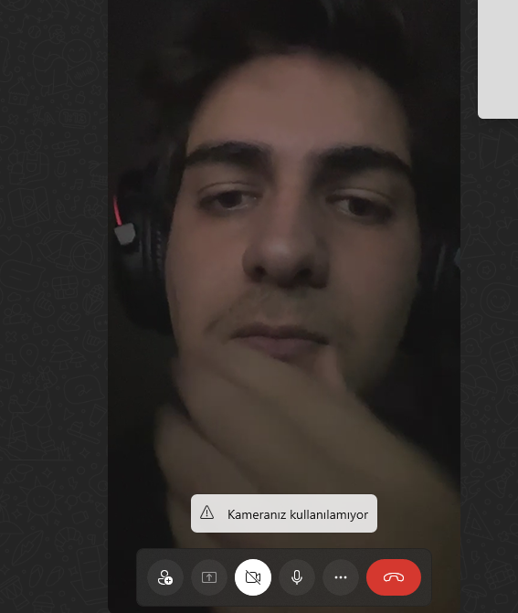

Arkadaşını beklerken
birlikte müzik dinle
Bir oda aç, istediğin gibi süsle, linki paylaş. Odadaki herkes aynı şarkıyı aynı anda duyar.
Bir oda aç, istediğin gibi süsle, linki paylaş. Odadaki herkes aynı şarkıyı aynı anda duyar.

Odadaki herkes aynı şarkıyı aynı anda dinliyor.